Rave On Design
Rave On's design guidelines, components and requirements are explained in this page.
Screen Resolution
The project objective is to display the application in an 8K touch-screen (8192 x 2100). The user should be able to reach the controls at any point of the interaction. Therefore, any control should be placed on the bottom 2/3 areas of the screen.
Page divisions
The application page is divided in 3 main areas (avoiding the area occupied by the browser bar):
- User Area 1: Allows the first user to select his/her artists and genres.
- User Area 2: Allows the second user to select his/her artists and genres.
- Shared Area: Shows graphs and information about users similarities in musical preferences.
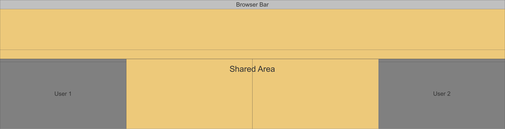
Each user will display his/her information in a different color on the shared graphs.
In more detail, the shared area is divided to show the following information:
- Shared Timeline: Allows to see the timespan of the artist activity.
- Sharea Map: Allows to compare the countries of origin of selected artists and genres.
- Shared Force Graph: Allows to relate artists based on their shared genres in a graph view.
- Shared Artists & Genres: Shows the selected artists and genres from both users and highlights similarities.
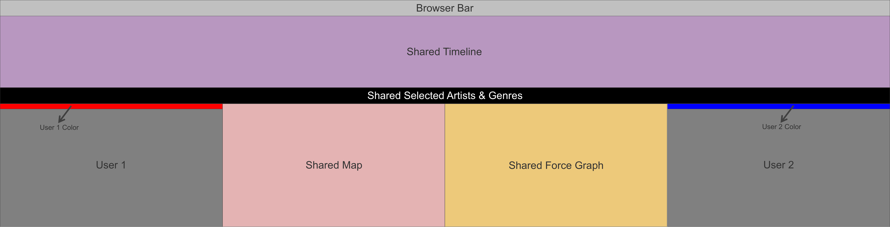
Components
User Control Panel
This set of controls will be located on the areas described as User 1 and User 2 in the images shown above. Its purpose is to allow the user to select artists and genres in an interactive way; starting with the idea of a timeline that shows the top 10 genres per decade as a reminder of which are the most popular genres for the majority of people.
By selecting a genre (clicking on the timeline), the user may be able to Explore the top ten artists and genres in a decade (or decade range) and then get suggestions of related artists and genres. However, the user can avoid this suggestions and Search for his preferred artists using a set of filters.
On the left side, a vertical bar will store the user selections which will allow the user to share this information and compare it in the shared area. Furthermore, at any time, the user may drop the decision taken and delete some information, making every shared chart reset the information shown.
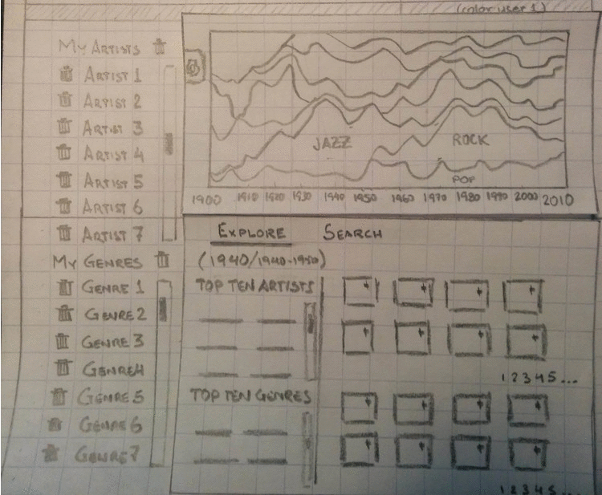
Timeline
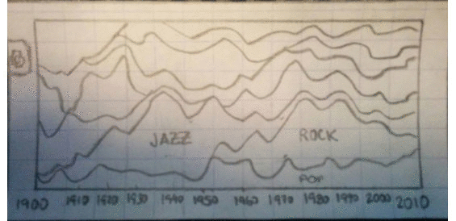
- The decades are clickable
- Optional: If needed to update chart parameters, show a panel where you can change:
- Top: Max number of items displayed per decade
- Items: Show most or less popular
- Initial Decade
- Final Decade
Selected Artists & Genres
Explore Tab
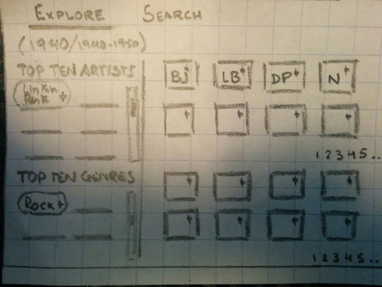
- The decade or range of decades selected in the timeline is shown on top.
- User can add an artist or genre to the selection list by clicking on the + sign located at the rightmost part of the name.
- Recommended artists will be presented like thumbnails with initials. When hovering, the user can see more details.
- The initial idea was to show the picture of the artist.
- Genres will be also shown as thumbnails.
Search Tab
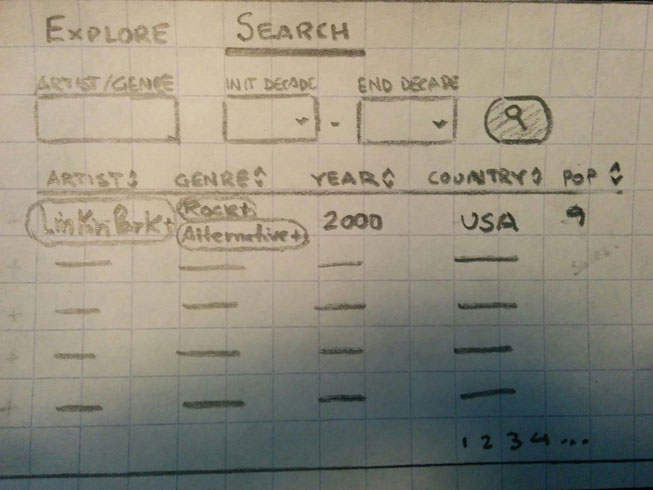
- Use a button to search.
- User can add an artist or genre to the selection list by clicking on the + sign located at the rightmost part of the name.
- Popularity will be based on the API hotness value.
- Values will be sorted by popularity.
- An artist may have multiple genres that can make the list messy!
- Year will be decade or range?
Shared Timeline
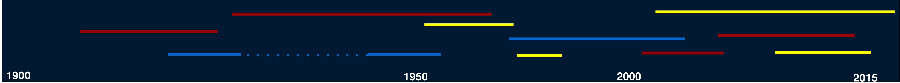
Timeline will display artist and genre information for those selected by both users.
- Shows the artist's activity period.
- Shows the artist's inactive period with dotted lines.
- All artists will be color-coded indicating the user selection.
Shared Artists & Genres
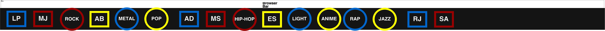
- Artist will be represented in a square shape.
- Genres will be represented in a circle shape.
- All Artist and Genres will be color-coded indicating the user selection.
Shared Map
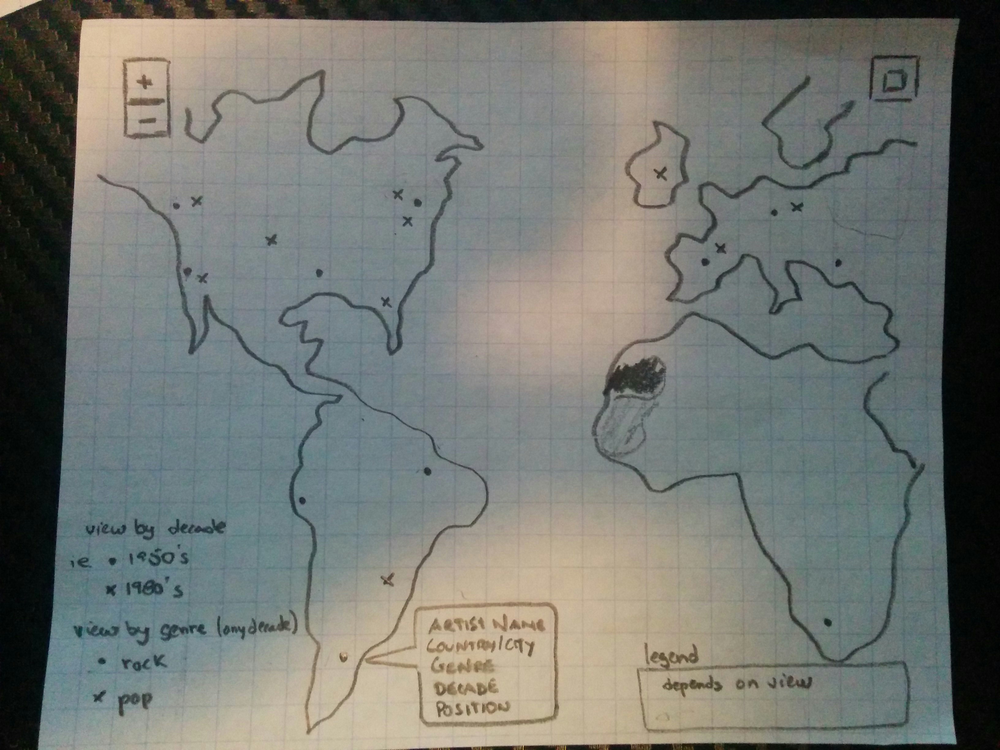
Basics:
- Use mapbox/leaflet for the mapping implementation with built-in zoom functions via +/- buttons on map, mouse scroll wheel, touch pinch.
- Add reset zoom button.
- Add layers controls to toggle different views (described below).
- Add legends to describe color schemes, markers, etc.
- Data processing will likely use GeoJSON to combine the music data with the location data to be easily fed onto the map.
Layer 1: Linked to the timeline to display all artists from all genres from all decades, show only 10 artists of a particular decade, and show all top 10 artists from all decades for a single genre
- Representation of the data will be in the form of a circle marker whose radius and color intensity correlates the number of artists from a particular city. For example, a city with 5 artists will have a larger circle and darker color than a city with only 1 artist. Double visual cues will make it easier for the user to perceive the differences.
- Clicking individual circles will give a popup with information about all artists from that city.
Layer 2: Linked to custom user 1 and user 2 selections lists for
- Markers will be similar to that of layer 1.
- User will be able to toggle between both users’ custom artist list or genre list
- Color scheme for artists list will be something like red circles for user 1, blue for user 2, and yellow where both users chose artists from the same cities, possibly even with a color gradient using the three colors.
- Color scheme for genre list will have to use a number of circle fill colors to represent large numbers of genres, and the circle stroke (outline) color could be used to indicate which user selected a particular genre.
- Note: the representation scheme is more complex for layer 2, so modifications will likely be made after actually testing some datasets on the map.
Shared Force Graph
The force graph shows the relationships between artists and genres with the basic idea of connecting artists through the genres they share. The graph is displayed is two modes:
- Population: Shows the information for the top ten artists per decade.
- Users: Shows the information based on the values entered by the two users.
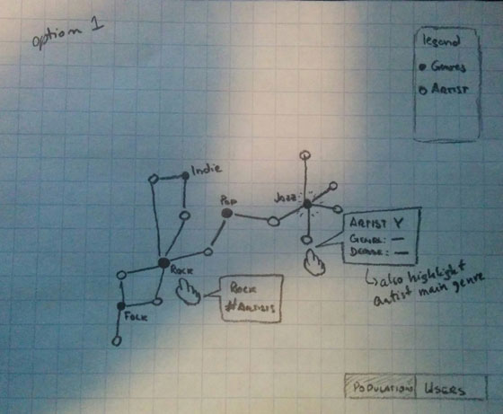
- Artists and genres are represented as nodes.
- An artist is connected with genres nodes only.
- Another artist is related to a given artists is they are both connected to the same genre node.
- Node labels are only shown for genres.
- On hover, information is shown for any node.
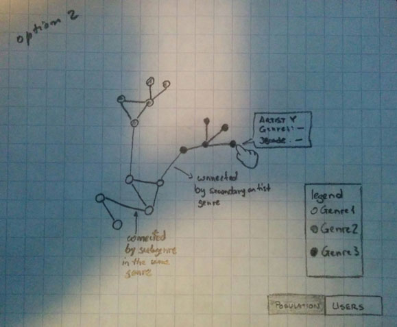
- Artists are represented as nodes.
- Color represents a Genre. Artists with the same color belong to the same Genre but may not belong to the same subgenre.
- Artists can be connected based on secondary genres.
- On hover, information is shown for any node.